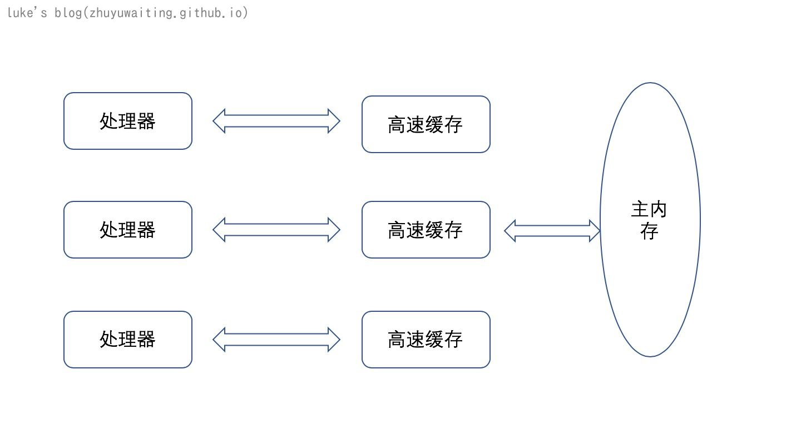

并发和并行
当我们去网上搜索并发的时候，总是能看到并行，并发并行这两个概念似乎总是不分家。那么我们来看看并发并行都有些什么区别：
Concurrency is about dealing with lots of things at once. Parallelism is about doing lots of things at once.
When an application is capable of executing two tasks virtually at same time, we call it concurrent application.Though here tasks run looks like simultaneously, but essentially they MAY not
Parallelism does not require two tasks to exist. It literally physically run parts of tasks OR multiple tasks, at the same time using multi-core infrastructure of CPU, by assigning one core to each task or sub-task.
Parallelism requires hardware with multiple processing units, essentially. In single core CPU, you may get concurrency but NOT parallelism.
百度是这样描述并发的
:在操作系统中，并发是指一个时间段中有几个程序都处于已启动运行到运行完毕之间，且这几个程序都是在同一个处理机上运行，但任一个时刻点上只有一个程序在处理机上运行。
并行:
在操作系统中是指，一组程序按独立异步的速度执行，不等于时间上的重叠（同一个时刻发生)
通过上面的描述，其实是可以有一些感觉建立的：
- 并发是对于单cpu上多任务的场景来描述的，并发利用不同的CPU时间片，逻辑上是同时执行多项任务，事实的可能是多任务穿插在不同时间片上顺序执行
- 并行是有多个cpu核心，不同的任务可以在同一刻同时执行。
- 实际上对于多核cpu来说，现在的多线程也都是并行执行的。

三大特性：
- 原子性
- 可见性
- 顺序行
原子性
原子性指的是一个或者多个操作在CPU执行过程中不被中断的特性。即要不全部执行完成，要不不执行。
a++操作：
- 加载a
- +1
- 结果写入内存，赋值a
a=0,如果两个线程同时执行 a++。 我们期望输出2，但是实际上
可能得到的结果是 1。 这便是原子性问题
可见性
可见性指的是当一个线程修改了共享变量后，其他线程能够立即得到修改的值。
线程 1，2 共享同一个变量a, 如果1修改了2看不见，便会导致a变量值的不可预测性。
有序性
有序性指的是程序执行的顺序按照代码的先后顺序执行。
一般来说，处理器为了提高程序的的运行效率，可能会对输入代码进行优化，它不保证程序中各个操作语句的执行先后数据同代码中的顺序一致，但是它会保证程序最终执行结果和代码顺序执行结果的一致性。
如果处理器指令经过重排，单线程下指令重排会保证结果一致性，但是多线程情况下指令重排由于共享变量的存在，可能导致不可预测的结果。
内存模型
了解完并发的基本概念，以及三大特性，我们来看看内存模型，为什么要了解系统的内存模型呢，因为并发的操作，在单核系统上实际上是多个任务穿插执行，多核系统上可能是多个cpu核心同时并行执行多任务。那么了解系统的内存模型，了解cpu，内存的交互就显得至关重要。
我们知道经典的冯洛伊曼体系结构如下：
但是又由于存储器(主存)与处理器（CPU）之前的运算速度相差巨大（指数级）,故而，为了解决主存带来的耗时问题，引入了高速缓存。结构如下所示：

总线锁定
现代计算机一般都是多CPU，那么多CPU核心对于主内存中同一个区域的访问就会存在冲突的问题，也就引发了原子性，可见性，一致性等多个问题，那么是如何解决的呢？
总线锁:就是使用处理器提供的一个LOCK#信号，当一个处理器总线上输出此信号时，其它处理器的请求将被阻塞住，那么该处理器可以独占共享内存。如此多CPU的操作就变成了单cpu操作，也就没有并发问题了。
缓存锁定和缓存一致性
由于，我们只需要保证对某个内存地址的操作是原子的即可，但是总线锁把CPU和内存之间的通信锁住了，这使得在锁定期间，其他处理器也不能操作其他内存地址的数据，所以总线锁的开销比较大。目前，处理器在某些场合下使用缓存锁来代替总线索进行优化。
缓存锁就是指内存区域如果被缓存在处理器的缓存行中，并且在LOCK#操作期间，那么当它执行操作回写到内存时，处理器不在总线上声言LOCK#信号，而是修改内部的内存地址，并允许它的缓存一致性机制来保证操作的原子性，因为缓存一致性机制会阻止同时修改由两个以上处理器缓存的内存区域数据，其他处理器回写已被锁定的缓存行的数据时，就会使缓存无效。
缓存一致性 MESI
MESI协议(Modified,Exclusive,Share,Invlid) 用四种标志来区分缓存数据的状态，以此来决定CPU何时把缓存的数据写入到内存，何时从缓存读取数据，何时从内存读取数据。
Modified(修改状态):
当前缓存数据是有效的,数据还未同步到内存中去,通知其他缓存设置为Invlid
Exclusive(独占状态):
当前缓存有效，并且只在当前缓存有，数据与内存一致
Share(共享状态):
所有缓存公有，数据与内存一直
Invalid(无效状态):
当前缓存无效。
只有当缓存段处于E或M状态时，处理器才能去写它，也就是说只有这两种状态下，处理器是独占这个缓存段的。当处理器想写某个缓存段时，如果它没有独占权，它必须先发送一条“我要独占权”的请求给总线，这会通知其他处理器，把它们拥有的同一缓存段的拷贝失效（如果它们有的话）。只有在获得独占权后，处理器才能开始修改数据——并且此时，这个处理器知道，这个缓存段只有一份拷贝，在我自己的缓存里，所以不会有任何冲突。反之，如果有其他处理器想读取这个缓存段（我们马上能知道，因为我们一直在窥探总线），独占或已修改的缓存段必须先回到“共享”状态。如果是已修改的缓存段，那么还要先把内容回写到内存中。

如上图所示，可以发现，在CPU1失效缓存到CPU0可以修改之间，CPU0只能处于等待状态，这就比较浪费性能了。
Store Bufferes和Invalidate Queues
基于缓存一致性模型，提出了Store Bufferes 存储缓存的概念。
Store Bufferes 缓存存储，当处理器需要把修改写入缓存时，然后在写入内存这个过程时，我们处理器不需要等待了。只需要把指数据写入Store Bufferes，然后发生Invalidate消息给其它CPU，然后本CPU就可以去执行其它指令了，等到我们都收所有回复确认Invalidate Acknowledge消息，在把Store Bufferes消息写回缓存修改状态为（M），如果有其它CPU来读，就会刷新到内存，状态变为S。Store Bufferes 的作用是让 CPU 需要写的时候仅仅将其操作交给 Store Buffere，然后继续执行下去，Store Bufferes 在某个时刻就会完成一系列的同步行为。
Store Bufferes 存储缓存 解放了CPU的等待时间，但是如果CPU同时处理的事情比较多，需要失效的缓存数据比较多，那么久会非常占用空间，于是设计出了Invalidate Queues
Invalidate Queues 失效队列：当别的CPU收到Invalidate消息时，把这个操作加入无效队列，然后快速返回Invalidate Acknowledge消息，让发起者做后续操作，然后Invalidate并不是马上处理，而只是加入了队列，也就是说其实不是立刻让本CPU的缓存数据失效，而是等CPU处理无效队列里的无效消息时。
Store Bufferes和Invalidate Queues 分别从解放本次CPU等待时间，异步话对侧失效操作两个方面对缓存一致性模型进行了优化，也就成为了下面的结构：

可见性问题：
由于Store Buffers和Invalidate Queues的引入，导致CPU的操作变成了最终一致性，而这种最终一致性。而这种最终一致性，会导致在多核处理中，对于有依赖关系的变量修改就变的不可见了：
1 | void foo(void){ |
CPU0运行foo，CPU1运行bar。假设序列如下 ：假设cpu1之前运行过其他指令，有a的缓存，无b的缓存
- CPU0 要修改a ，写入Store Buffer 通知总线要独占，CPU1收到，放入Invalidate queue ,返回确认，CPU0把Store Buffer 内容写入缓存0。
- CPU0 要修改b， cpu独占b，直接写入。改为M
- CPU1 读取b，此时CPU0监听到，修改为S 回写内存，b==0循环结束
- CPU1读取缓存，由于已经有缓存了，但是其缓存队列 Invalidate queue中在等待执行，其顺序没法保证，如果已经失效，能读取到 a=1 如果还没失效，那就是之前缓存中的值。
也就失去了修改的可见性。
为了解决这个问题，底层增加了一个内存屏障（memory barrier）的指令：
Store Memory Barrier(a.k.a. ST, SMB, smp_wmb)是一条告诉处理器在执行这之后的指令之前，应用所有已经在存储缓存（store buffer）中的保存的指令。
Load Memory Barrier (a.k.a. LD, RMB, smp_rmb)是一条告诉处理器在执行任何的加载前，先应用所有已经在失效队列中的失效操作的指令
1 | void foo(void){ |
此时，之前不走中的4中的问题就不在存在了，因为其a在写入之后，立刻就会执行刷新到缓存，assert(a==1)执行前，会先吧失效队列中的指令执行完毕
java 内存模型
系统内存模型，通过总线锁，缓存锁和缓存一致性协议来保证并发的可靠，那么java内存模型又是怎么做的呢
由于java是跨平台的语言，所以java需要解决不同平台不同操作系统的内存访问的差异，以让java程序在各个平台下都能达到一致的访问效果。故而java需要定义一套模型，让java的并发内存访问操作不会产生歧义。
而java内存模型就是这样的产物。java内存模型主要定义了各种变量的访问规则。其规定所有变量都必须存储在主内存(此处表示虚拟机内存的一部分）中每条线程有自己的工作内存，保存该线程使用变量的工作副本。线程对变量的所有操作都必须在工作内存中完成。如下图所示：

当一个线程进行更新的时候会通过线程间通信，让另一个线程从主内存中获取数据:
我们知道JMM java内存，对于是对于内存模型的抽象话管理，基础的操作都是操作系统调用去完成，故而原子性等特性都遵从于操作系统的指令级原子性，或者有更多的封装。
但是由于编译优化，指令级重排序等问题，会保证程序执行的顺序最终一致，对于单线程来说，没有问题，但是多线程会造成可见性，顺序性问题。
原子性
java 定义了8种原子性操作
- lock（锁定）：作用于主内存的变量，它把一个变量标识为一条线程独占的状态。
- unlock（解锁）：作用于主内存的变量，它把一个处于锁定状态的变量释放出来，释放后的变量才可以被其他线程锁定。
- read（读取）：作用于主内存的变量，它把一个变量的值从主内存传输到线程的工作内存中，以便随后的load动作使用。
- load（载入）：作用于工作内存的变量，它把read操作从主内存中得到的变量值放入工作内存的变量副本中。
- use（使用）：作用于工作内存的变量，它把工作内存中一个变量的值传递给执行引擎，每当虚拟机遇到一个需要使用变量的值的字节码指令时将会执行这个操作。
- assign（赋值）：作用于工作内存的变量，它把一个从执行引擎接收的值赋给工作内存的变量，每当虚拟机遇到一个给变量赋值的字节码指令时执行这个操作。
- store（存储）：作用于工作内存的变量，它把工作内存中一个变量的值传送到主内存中，以便随后的write操作使用。
- write（写入）：作用于主内存的变量，它把store操作从工作内存中得到的变量的值放入主内存的变量中。
并且 read&load 成对出现， store&write成对出现，以及一些列规则来保证基本的读取和写入的原子性。
可见性：
java中通过定义了 volatile 关键字，来保证变量新值能立即刷新到主内存中，以及每次使用都从主内存中刷新来保证。
也通过 锁 synchronized 和 final 关键字 来实现。
有序性
java通过定义了happen-before原则来保证有序性。通过该原则我们数据是否存在竞争，线程是否安全。
- 程序次序原则：在一个线程内，按照控制流，书写在前面的要先于后面的
- 管程锁定原则：一个unlock操作先于后面对同一个锁的lock
- volatile原则：对一个volatile变量的写先于后面对这个变量的读
- 线程启动原则：Thread的start()先于这个线程的所有操作
- 线程终止原则：线程中所有操作都先于线程终止操作
- 线程终端原则：interrupt调用先于被中断代码检测到中断时间
- 对象终结原则：对象的初始化完成先于finalize（）的开始
- 传递性： a先于b b先于c 则a先于c
总结：
本文首先了解了并发和并行的基本概念，然后分别通过系统内存模型，和java内存模型了解了系统内存已经java内存对于并发三大特性的处理。
内存模型 通过总线锁 缓存锁 缓存一致性协议 内存屏障来保障并发的可靠性
java内存模型通过 基础原子性操作 volatile 锁 happen-before原则来保证并发的可靠性
http://www.rdrop.com/users/paulmck/scalability/paper/whymb.2010.07.23a.pdf
https://blog.51cto.com/14220760/2370118?source=dra